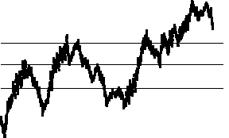
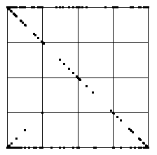
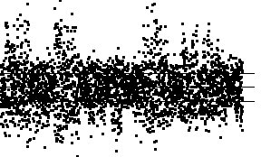
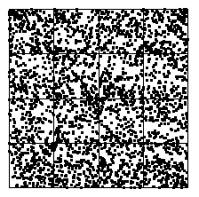

| Here we use the cartoon with generator having turning points |
 |
|  |  |
| Here is the time series of the cartoon data. | Here is the IFS driven by the data. Note the familiar backward Z, a characteristic of consecutive data points lying in the same bin or in adjoining bins. |
|  |  |
| Here are the successive differences of the cartoon data. The bin boundaries are set so bin1, bin2, bin3, and bin4 contain about the same number of data points. | Here is the IFS driven by these differences as data points.
As expected, squares 1, 2, 3, and 4 have about the same number of IFS points.
There may be a slight clustering of IFS points along the diagonal from
|